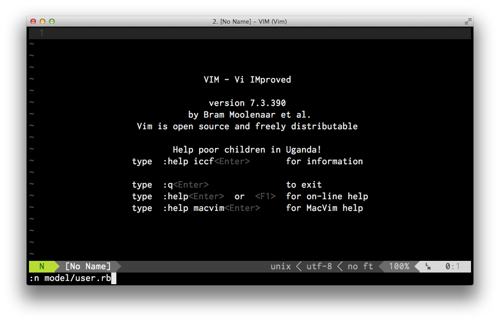
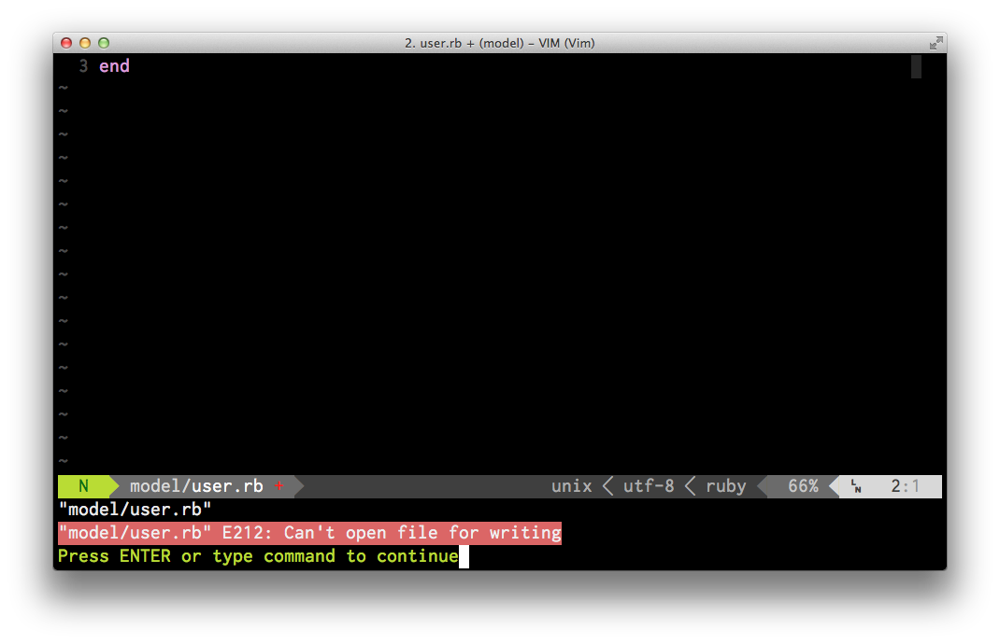
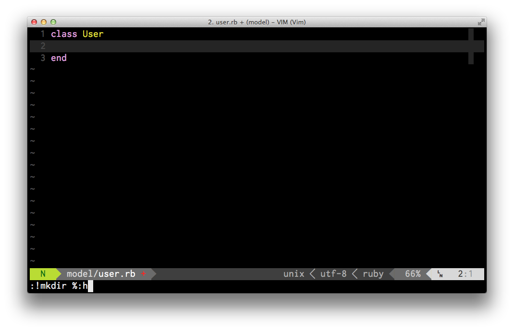

I just subscribed to Destroy All Software as well as the great content, I’m picking up lots of vim tips. I’m having to pause the video a lot, Gary is just too damn fast. Any way I’m going to start writing these vim gems down in the vain hope I’ll remember some of them.
Quickly creating a project structure
It’s possible to setup a new project without leaving vim. Lets create a new dir for a quick demo:
1 2 3 | |
From the vim command prompt we can create a new user model in the models dir
using the vim command :n models/user.rb

Lets break this command down:
- :n - n is short for new as in file
- models/user.rb - the directory and name of our new file
This creates the new file in a vim buffer but when we go to write this file we
get an error E212: Can't open file for writing, this is because the directory
models does not exist.

We can create this directory right from the vim command prompt with !mkdir %:h

Now the directory has been created we can write the new file from vim.
So what does the cryptic command !mkdir %:h actually mean? Let break it down:
- :! - Execute {command} with the shell
- mkdir - Make a directory shell command
- %:h - The directory of the current file (in our case models)
The full vim help text for %:h:
1 2 3 4 5 6 7 8 9 10 | |
Deeper folder structure
You can create deeper folder structures using the same technique with one extra switch on the mkdir command.
1 2 3 | |
The -p switch will create the intermediate directories for you. If you don’t
use this switch the command will fail.
The full command line help for the mkdir -p switch:
1 2 3 4 5 6 | |
I think that’s as much as I need to know about :!mkdir %:h for now.